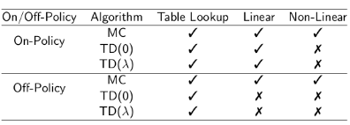
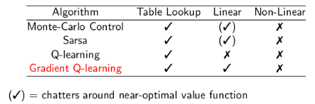
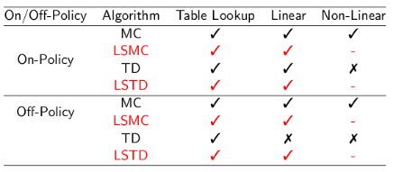

值函数近似
前面我们介绍了免模型的预测和控制，但它们的求解和更新价值函数实际上都是查表操作。但是这种方式对于状态空间很大和状态空间连续的情况是不可行的，因此我们需要真正学习出一个函数，它的输入是状态，输出是它的价值，函数的学习可以通过神经网络来完成。也就是:
v^(s,w)or q^(s,a,w)=v(s)=q(s,a)
w 是它的参数。 这种用神经网络一类的方法估计状态函数还具有泛化能力，可以泛化到unseen states。
这种函数近似有3种方式：
- 输入s，输出状态价值函数
- 输入s，a，输出q函数
- 输入s，输出q关于a的分布函数
而且这门课程中采取的函数近似的方式都是可微分的方式，比如神经网络，比如特征的组合（LR）等等。
而且由于每一个时刻状态和它的下一个时刻状态是相关的，因此近似的方法不能对数据有iid的假设。
Incremental methods
假如值函数的近似是一个有监督的问题，也就是我们对于每一个状态有一个确切的值去逼近则：
-
目标函数：
J(w)=Eπ[(vπ(S)−v^π(S,w))2]
-
梯度下降：
△w=21α▽wJ(w)=αEπ[(vπ(S)−v^π(S,w))▽wv^(S,w)]
-
随机梯度下降：
△w=α(vπ(S)−v^π(S,w))▽wv^(S,w)
这里表示特征向量的方式：
x(S)=⎝⎛x1(S)x2(S)..xn(S)⎠⎞
向量中的每一个元素都是一个数值，对应了一个S的特征。
Linear Combination
假如是个有监督问题的话，最简单的一种近似是采用类似LR这类方法的线性组合，即：
v^(S,w)J(w)△w=x(S)Tw=j=1∑nxj(S)wj=Eπ[(vπ(S)−x(S)Tw)2]=α(vπ(S)−v^(S,w))x(S)
这里的w也采用随机梯度下降更新。
Lookup table 表现为梯度更新的形式
xtable(S)=⎝⎛1(S=s1)1(S=s2)...1(S=sn)⎠⎞
将特征函数表示为one-hot形式。
\begin{equation}
\begin{aligned}
\hat{v}(S, w) =
\left(
\begin{array}{c}
1(S = s_1)\\
1(S = s_2)\\
...\\
1(S = s_n)
\end{array}
\right)
\dotproduct
\left(
\begin{array}{c}
w_1\\
w_2\\
..\\
w_n
\end{array}
\right)
\end{aligned}
\end{equation}
这样每个w对应一个状态，这样每个w就是一个价值函数。这就和lookup table作用相同了。
实际中无监督的情况做近似
由于强化学习没有v的值作为目标，因此我们需要找到可以作为目标的值：
-
MC方法，目标是Gt:
△w=α(Gt−v^(St,w))▽wv^(St,w)
-
TD(0), 目标是一步之后对前一状态的预估：
△w=α(Rt+1+γv^(St+1,w)−v^(St,w))▽wv^(St,w)
-
TD(λ), 目标是 Gtλ:
△w=α(Gtλ−v^(St,w))▽wv^(St,w)
Monte-Carlo with Value Function Approximation
可以将每个回合表现成如下形式：
<S1,G1>,<S2,G2>...
采用蒙特卡罗的策略更新方式和linear combination的函数近似方式，则：
△w=α(Gt−v^(St,w))x(St)
TD Learning with Value Function Approximation
TD(0)
每个回合可以表现为：
<S1,R2+γv^(S2,w)>,<S2,R3+γv^(S3,w)>+....
采用TD(0)的策略更新和linear combination的函数近似方式，则：
△w=α(R+γv^(S′,w)−v^(S,w))x(S)
TD(λ)
每个回合可以表现为：
<S1,G1λ>,<S2,G2λ>...
采用TD(λ)的策略更新和linear combination的函数近似方式，则：
Forward view:
△w=α(Gtλ−v^(St,w))x(St)
Backward view:
δtEt△w=Rt+1+γv^(St+1,w)−v^(St,w)=γλEt−1+x(St)=αδtEt
E_t 的更新，它做的是和前面一样的事情，如果没有出现过就一直衰减。如果出现了，就对应的特征有相应的增长。
Action Value Function Approximation
前面介绍的都是状态函数的近似。但是对于上两章节的内容，我们介绍了免模型的预测和控制，在这种情况下，我们近似的不应该是V函数而是Q函数。因为只有近似Q函数，我们才可以在不需要使用状态转移函数的情况下，用greedy的方式得到最优策略。
Q函数的近似方式类似前面的V函数：
q^(S,A,w)J(w)21▽wJ(w)△w≈q(S,A)=Eπ[(qπ(S,A)−q^(S,A,w))2]=(qπ(S,A)−q^(S,A,w))▽wq^(S,A,w)=α(qπ(S,A)−q^(S,A,w))▽wq^(S,A,w)
类似的，特征函数表示为：
x(S,A)=⎝⎛x1(S,A)x2(S,A)..xn(S,A)⎠⎞
如果采用linear combination
q^(S,A,w)J(w)△w=x(S,A)Tw=j=1∑nxj(S,A)wj=Eπ[(qπ(S,A)−x(S,A)Tw)2]=α(qπ(S,A)−q^(S,A,w))x(S,A)
策略更新的不同方式：
-
MC策略更新：Gt 为目标
△w=α(Gt−q^(S,A,w))▽wq^(S,A,w)
-
TD(0):
△w=α(Rt+1+γq^(St+1,At+1,w)−q^(S,A,w))▽wq^(S,A,w)
-
TD(λ):
-
Forward:
△w=α(qtλ−q^(S,A,w))▽wq^(S,A,w)
-
Backward:
δtEt△w=Rt+1+γq^(St+1,At+1,w)−q^(St,At,w)=γλEt−1+▽wq^(St,At,w)=αδtEt
Convergence
预测方法

对号代表模型最终会收敛，错号代表模型不能保证收敛。
但是还有一种TD的变种，gradient TD 则在on-policy 和 off-policy 的这几种方式上都可以保证收敛。但是课程中不介绍。
控制方法

Batch Methods
前面介绍的方式都是基于数据流的方式，但是这种方式不够高效，而且使用一次之后就扔掉，没有充分的利用数据。我们希望可以将一部分的经验集中在一起再一起训练，提高训练效率。
最小二乘法
仍然假设v^(s,w)≈vπ(s)
Experience D={<s1,v1π>,<s2,v2π>,..}
损失 :
LS(w)=t=1∑T(vtπ−v^(st,w))2=ED[(vtπ−v^(st,w))2]
最小二乘法可以直接求解，但是求逆矩阵的复杂度是O(N3)
基于经验回放的随机梯度下降
这种方式可以求解最小二乘法的解
从经验 D={<s1,v1π>,<s2,v2π>,...} 随机采样得到<s,vπ>∼D
采用随机梯度下降 △w=α(vπ−v^(s,w))▽wv^(s,w)
最终收敛于： wπ=argwminLS(w)
LSMC
vtπ≈Gt 代入
LSTD
vtπ≈Rt+1+γv^(St+1,w) 代入
LSTD(λ)
vtπ≈Gtπ
convergence

LS这些方法可以保证Linear 部分converge
LSPI
Least Square Policy Iteration = Least Square + Policy Iteration
Policy Evaluation 采用 Least Square Q-learning （也就是下面的 DQN）
Policy Improvement 采用 greedy policy improvement
Deep Q-Network(DQN) + experience replay
DQN 采用了经验回放和固定的Q target
- 根据ε-greedy的方式，采取action at
- 将(st,at,rt+1,st+1) 存于D
- 从D 中随机采样 (s,a,r,s′)
- 损失为 Li(wi)=Es,a,r,s′∼D[(r+γa′maxQ(s′,a′;wi−)−Q(s,a;wi))2] 其中w−代表这部分的参数不参与更新
- 用随机梯度下降进行更新